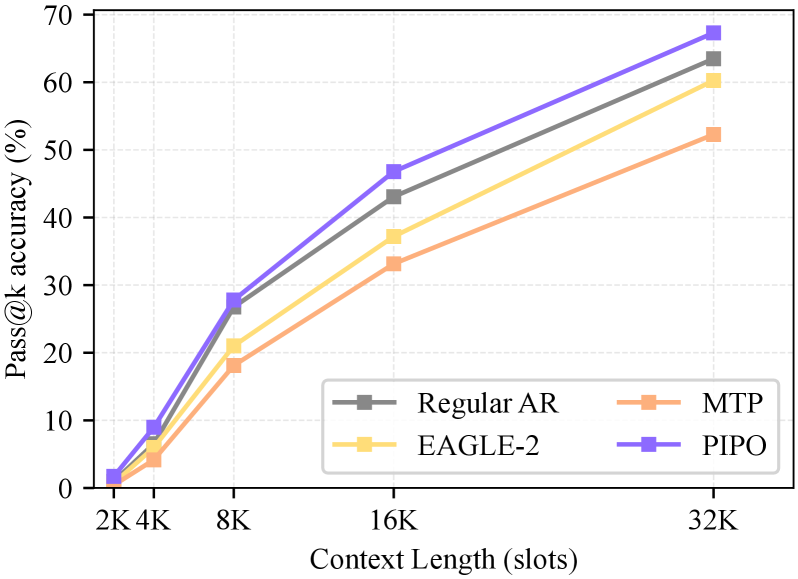
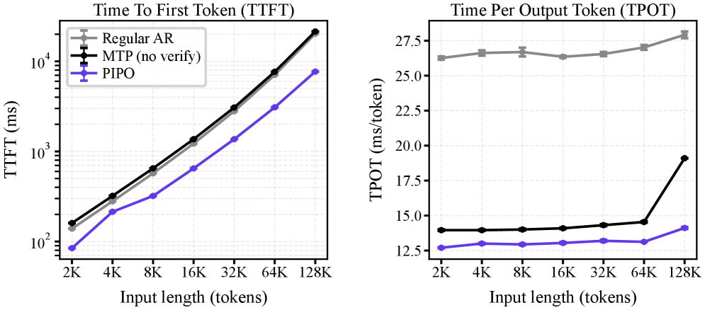

PIPO proposes a symmetric pair-in/pair-out architecture that halves input length and doubles output tokens per step, while using a confidence head trained via OPD to eliminate the verifier cost of speculative decoding.
本文提出PIPO框架，通过对称的“成对输入/成对输出”架构，统一了输入侧潜在压缩与输出侧多令牌预测，并利用在线策略蒸馏训练的轻量级置信度头替代了推测解码中昂贵的验证器。在Qwen3.5-4B/9B骨干模型上，PIPO实现了最高2.64倍的首令牌延迟加速和2.07倍的每输出令牌延迟加速，并在多个基准测试中将pass@4指标提升了最多7.15个百分点。
Deep Note — pipo
Key Takeaways - Unifies input-side latent compression and output-side multi-token prediction (MTP) into a single framework. - Replaces the expensive verifier in speculative decoding with a lightweight confidence head trained via on-policy distillation (OPD). - Achieves up to 2.64x TTFT and 2.07x TPOT speedups on Qwen3.5-4B/9B backbones. - Improves pass@4 by up to +7.15 points over regular decoding on AIME 2025, GPQA-Diamond, LiveCodeBench v6, and LongBench v2.
0) Metadata
- Title: Pair-In, Pair-Out: Latent Multi-Token Prediction for Efficient LLMs
- Alias: pipo
- Authors: Wenhui Tan, Minghao Li, Xiaoqian Ma, Siqi Fan, Xiusheng Huang, Liujie Zhang, Ruihua Song, Weihang Chen
- arXiv ID: 2605.27255
- Published:
- Links:
- Abs: https://arxiv.org/abs/2605.27255
- HTML: https://arxiv.org/html/2605.27255v1
- PDF: https://arxiv.org/pdf/2605.27255
- Tags: multi-token-prediction, speculative-decoding, latent-compression, efficient-llm, on-policy-distillation
- Domains: system_safety
- Rating: 5/5 (base 1 + quality 2 + observation 2)
1) Why-read
PIPO proposes a symmetric pair-in/pair-out architecture that halves input length and doubles output tokens per step, while using a confidence head trained via OPD to eliminate the verifier cost of speculative decoding.
2) CRGP
C — Context
Long chain-of-thought reasoning makes autoregressive decoding the dominant inference cost for LLMs. Existing methods separately target input-side latent compression or output-side multi-token prediction (MTP), but output-side methods still require an expensive verifier pass to validate draft tokens.
R — Related work
- Speculative decoding (Leviathan et al., 2023) drafts tokens with a small model and verifies with the large backbone.
- EAGLE (Li et al., 2024b) extends speculative decoding to hidden-feature space with parallel tree verification.
- Medusa (Cai et al., 2024) adds multiple decoding heads for parallel token prediction.
- Modern LLMs (e.g., Qwen3.5) natively include MTP heads during pretraining.
- Latent compression methods like CoLaR (Tan et al., 2026) compress reasoning chains but assume unimodal Gaussian distributions.
G — Gap
Input-side compression and output-side MTP have been pursued independently, missing a unified design. Output-side methods still incur a costly verifier forward pass per step, which can erase speed gains at long contexts.
P — Proposal
PIPO treats a latent compressor and an MTP head as mirror-image operations: the compressor folds two input tokens into one latent, and the MTP head unfolds one hidden state into one additional output token. A lightweight confidence head, trained alongside on-policy distillation (OPD) with negligible extra cost, replaces the verifier by predicting acceptance probability.
---
4) Experiments
Main results
On Qwen3.5-4B and Qwen3.5-9B backbones across AIME 2025, GPQA-Diamond, LiveCodeBench v6, and LongBench v2, PIPO improves pass@4 over regular decoding by up to +7.15 points, with up to 2.64x TTFT and 2.07x TPOT speedups.
Ablation
The confidence head trained via OPD achieves acceptance rates comparable to the full verifier pass, with negligible overhead; the advantage of PIPO widens as context budget grows (2K to 32K).
Limitations
['Requires a pretrained MTP head in the backbone, limiting applicability to models without native MTP.', "The confidence head may not perfectly match the verifier's rejection-sampling distribution in all settings.", 'Speedups depend on the acceptance rate of draft tokens, which may vary across tasks and domains.']
5) Why it matters
- Directly addresses the inference bottleneck of long reasoning chains, critical for scaling LLM reasoning.
- Provides a principled unification of two previously separate lines of work (input compression and output MTP).
- The confidence head approach offers a practical way to eliminate verifier cost without sacrificing reliability.
6) Next steps
- [ ] Apply PIPO to other backbone families (e.g., Llama, DeepSeek) to test generality.
- [ ] Explore extending the pair-in/pair-out idea to larger token groups (e.g., triplets).
- [ ] Investigate the confidence head's calibration under distribution shift (e.g., out-of-domain tasks).
7) Scoring
5/5 = base 1 + quality 2 + observation 2
Pair-In, Pair-Out: 面向高效大语言模型的潜在空间多令牌预测
主要结论 - 将输入侧潜在压缩与输出侧多令牌预测统一到一个单一框架中。 - 用通过在线策略蒸馏训练的轻量级置信度头替代推测解码中的昂贵验证器。 - 在Qwen3.5-4B/9B骨干模型上实现最高2.64倍TTFT和2.07倍TPOT加速。 - 在AIME 2025、GPQA-Diamond、LiveCodeBench v6和LongBench v2上，pass@4指标相比常规解码提升最多7.15个百分点。
1) 阅读理由
PIPO提出了一种对称的成对输入/成对输出架构，将输入长度减半并每步输出双倍令牌，同时使用通过OPD训练的置信度头消除了推测解码的验证器成本。
2) CRGP（背景 / 相关工作 / 差距 / 方案）
上下文：长思维链推理使得自回归解码成为大语言模型的主要推理成本。现有方法分别针对输入侧潜在压缩或输出侧多令牌预测，但输出侧方法仍需昂贵的验证器前向传播来验证草稿令牌。
相关工作：推测解码使用小模型生成草稿令牌并由大骨干模型验证；EAGLE将推测解码扩展到隐藏特征空间并采用并行树验证；Medusa添加多个解码头进行并行令牌预测；现代LLM（如Qwen3.5）在预训练中已原生包含MTP头；CoLaR等潜在压缩方法压缩推理链但假设单峰高斯分布。
差距：输入侧压缩和输出侧MTP被独立研究，缺乏统一设计。输出侧方法每步仍需昂贵的验证器前向传播，在长上下文场景下可能抵消加速收益。
提案：PIPO将潜在压缩器和MTP头视为镜像操作：压缩器将两个输入令牌折叠为一个潜在表示，MTP头将一个隐藏状态展开为一个额外的输出令牌。一个轻量级置信度头通过在线策略蒸馏训练，以可忽略的额外成本预测接受概率，从而替代验证器。
3) 实验
在Qwen3.5-4B和Qwen3.5-9B骨干模型上，针对AIME 2025、GPQA-Diamond、LiveCodeBench v6和LongBench v2基准测试，PIPO相比常规解码将pass@4指标提升了最多7.15个百分点，同时实现了最高2.64倍的TTFT加速和2.07倍的TPOT加速。
消融实验
通过在线策略蒸馏训练的置信度头实现了与完整验证器前向传播相当的接受率，且额外开销可忽略不计；随着上下文预算从2K增加到32K，PIPO的优势进一步扩大。
局限性
['要求骨干模型具备预训练的MTP头，限制了在无原生MTP模型上的适用性。', '置信度头可能无法在所有设置下完美匹配验证器的拒绝采样分布。', '加速效果取决于草稿令牌的接受率，而接受率可能因任务和领域而异。']
4) 重要性
- 直接解决了长推理链的推理瓶颈，对扩展LLM推理能力至关重要。
- 为之前两个独立的研究方向（输入压缩和输出MTP）提供了原则性的统一。
- 置信度头方法提供了一种实用途径，在不牺牲可靠性的前提下消除验证器成本。
5) 下一步
- [ ] 将PIPO应用于其他骨干模型家族（如Llama、DeepSeek）以测试其通用性。
- [ ] 探索将成对输入/成对输出思想扩展到更大的令牌组（如三元组）。
- [ ] 研究置信度头在分布偏移（如域外任务）下的校准性能。


